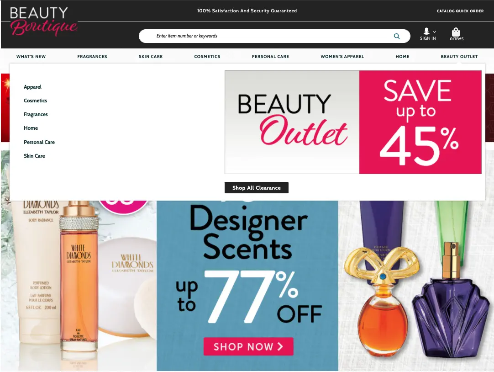
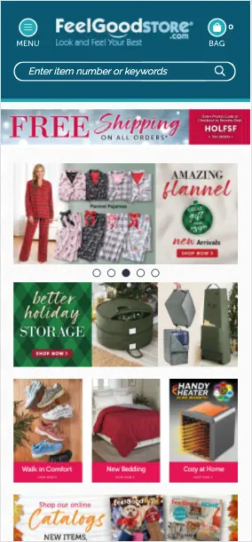
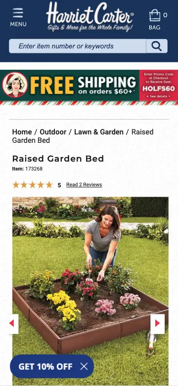
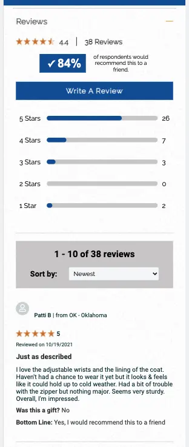
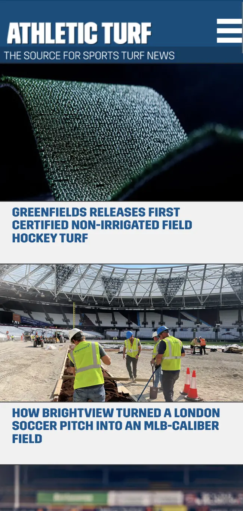
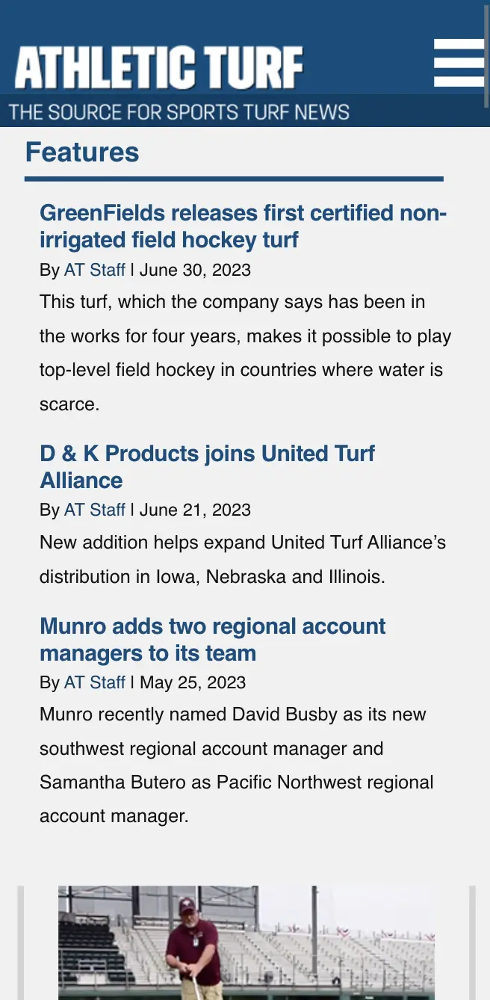
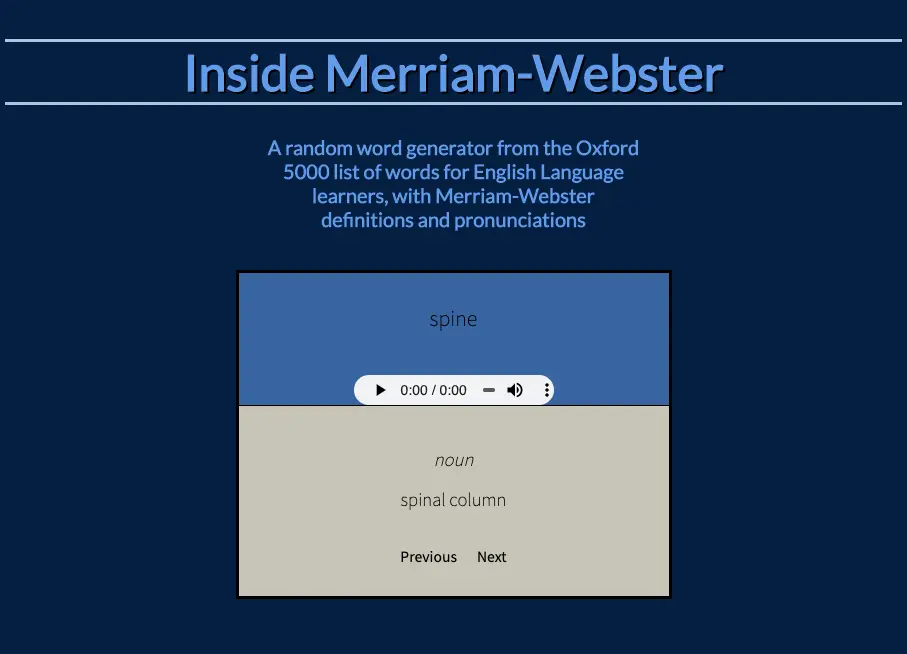

Front End Web Development
The Wyanoke Group (September 2022 - Present)
Work in collaboration with a robust development team to produce high quality digital interfaces for continuing medical education. Focused on front end solutions and bringing designs to life.
- JavaScript
- jQuery
- CSS
- SASS
- HTML
- Git Version Control
- Responsive Design
- Cross-Browser Compatibility
- Accessibility
- Delivering consistent, functional, and true to design front end code from detailed mockups
- Updating site functionality and styles according to WCAG standards
- Adapting site display and functionality based on UX recommendations
- Providing front end Javascript expertise
- Working alongside a large, effective team with clear roles in a collaborative environment
Web Development
Amerimark Direct (November 2020 - September 2022)
Front end specialist and full stack web developer.
- JavaScript
- jQuery
- CSS
- Less
- HTML
- Progress OpenEdge
- Git Version Control
- Google Tag Manager
- Google Analytics
- API Integration
- Responsive Design
- Cross-Browser Compatibility
- Accessibility
- Implementing a new mobile design site-wide
- Developing keyboard navigation for a custom menu according to WCAG standards
- Creating custom data visualizations
- Tracking user behavior by integrating Google Tag Manager into user interface interactions
- Completing a course in React and creating a React proof of concept




Web Development and Data Visualization (December 2021)
Native Plants of Northeast Ohio: Web application displaying native plants sized according to the number of butterfly and moth species they support. View Site
Web Development
North Coast Media (January 2020 - July 2020)
Full-stack web developer on a small development team working in conjunction with digital media editors.
- JavaScript
- jQuery
- CSS
- HTML
- Git Version Control
- SQL
- Google Tag Manager
- Google Analytics
- API Integration
- Responsive Design
- Establishing Google reCAPTCHA security across nine websites via API integration
- Creating and developing a new mobile design for AthleticTurf.net


General Assembly Software Engineering Immersive (September 2019 - December 2019)
Practical software engineering training program focused on peer programming and learning through doing.- JavaScript
- jQuery
- Angular
- React
- SQL
- PHP
- HTML
- CSS
- Responsive Design
- Accessibility
Inside Merriam-Webster: Interactive word generator displaying definitions and pronunciations from the Merriam-Webster API
View Site
Songbirds: Music sharing database built in collaboration with other students, contributions include reformatting YouTube links on submit and developing styles
View Site
Tattoo Heaven: Tattoo collection site displaying artwork organized by design, studio, and artist, allowing users to create an account and save personal collections
View Site